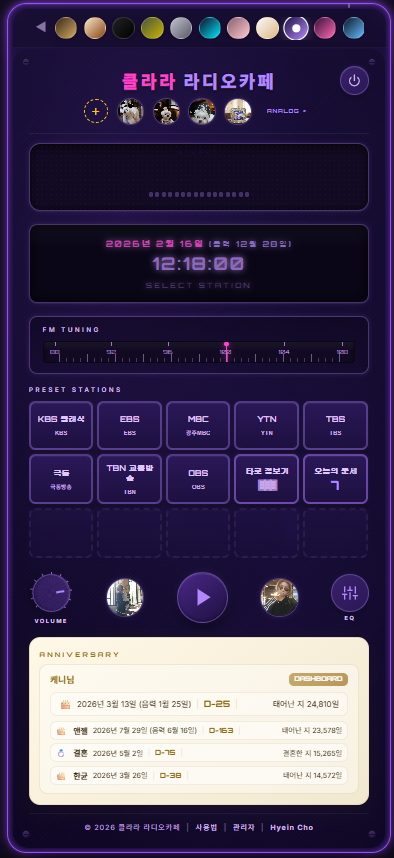
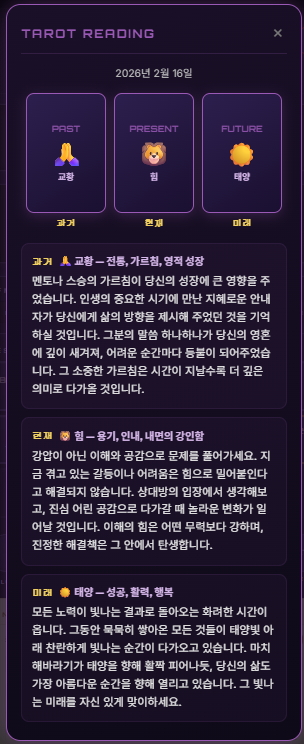
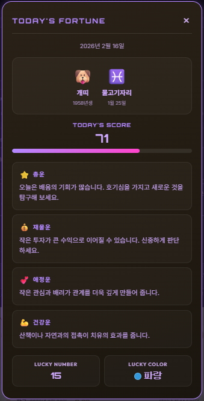

왜 직접 만든 플랫폼을 보여주는가
챕터 1에서 개발 환경을 준비하고, 매뉴얼 사이트를 하나 만들어봤다. 터미널에서 AI에게 말을 걸고, 그 결과물이 웹사이트가 되는 과정을 직접 경험했다.
그런데 여기서 의문이 생길 수 있다. "이렇게 간단한 사이트 말고, 진짜 쓸 만한 것도 만들 수 있는 건가?"
이 챕터에서 그 질문에 답한다. 필자가 2026년 1월 1일부터 바이브 코딩을 시작해서 6주 동안 만든 플랫폼 중 8가지를 소개한다. 교육, 비즈니스, 헬스케어, 크리에이티브 — 분야도 다양하고, 기능도 제각각이다. 하지만 공통점이 하나 있다. 코드를 직접 작성한 적이 단 한 줄도 없다는 것이다.
모두 Claude Code에게 말로 지시해서 만들었다. "이런 기능 넣어줘", "이 색상 바꿔줘", "여기에 테이블 추가해줘" — 그런 대화의 결과물이다.
참고: 이 챕터에서 소개하는 플랫폼들은 모두 GitHub Pages에 배포되어 실제로 접속할 수 있다. 각 플랫폼의 URL을 함께 표기하니, 직접 방문해서 확인해보길 바란다.
8가지 플랫폼 한눈에 보기
| 순서 | 플랫폼명 | 분야 | 한마디 설명 |
|---|---|---|---|
| 1 | AI 튜터 허브 | 교육 | 8가지 AI 튜터를 한 곳에 모은 교육 플랫폼 |
| 2 | 클라라 라디오카페 | 크리에이티브 | 11가지 테마의 실시간 라디오 스트리밍 카페 |
| 3 | 파이어내비 | 비즈니스 | 호화유람선 화재 대피 AI 시뮬레이션 |
| 4 | 세일즈 스파크 | 비즈니스 | 7가지 역량 진단과 영상 학습 통합 세일즈 교육 |
| 5 | 리젠메드컨설팅 | 헬스케어 | 첨단재생의료 인허가 컨설팅 플랫폼 |
| 6 | 덴탈 아카데미 | 헬스케어 | 치과 의료진 커뮤니케이션 & AI 케어 교육 |
| 7 | 치과 방문 케어 | 헬스케어 | 시니어 방문 구강 관리 서비스 플랫폼 |
| 8 | 어머니의 손맛 레시피 | 크리에이티브 | AI로 재현한 어머니의 요리 지혜와 추억 |
이제 하나씩 살펴보자.
플랫폼 1. AI 튜터 허브 교육
https://jaiwshim-project.github.io/aitutorhub/
이건 뭐 하는 플랫폼인가
AI 튜터 허브는 8가지 AI 튜터 서비스를 한 곳에 모아놓은 교육 플랫폼이다. 책을 읽다가 모르는 게 있으면 AI에게 물어보고, 수학 문제를 풀다가 막히면 AI에게 도움을 요청하고, 비즈니스 전략이 고민되면 AI에게 상담받을 수 있다.
어떤 튜터들이 있는가
| 순서 | 튜터 이름 | 설명 |
|---|---|---|
| 1 | AI Book Tutor | 책 내용을 기반으로 질문에 답하는 독서 튜터 |
| 2 | AI 교육 튜터 | 학습 개념을 쉽게 설명해주는 교육 도우미 |
| 3 | AI 질문 수학 튜터 | 수학 문제를 단계별로 풀이해주는 수학 전문 튜터 |
| 4 | AI 비즈 튜터 | 사업 전략과 비즈니스 개념을 가르쳐주는 경영 튜터 |
| 5 | AI Sales Tutor | 세일즈 기법과 영업 전략을 코칭하는 영업 튜터 |
| 6 | AI 갤러리 | AI가 생성한 이미지를 감상하고 배우는 아트 튜터 |
| 7 | AI 선거 튜터 | 선거 제도와 정책을 알기 쉽게 설명하는 정치 교육 튜터 |
| 8 | AI 신앙 튜터 | 종교적 질문에 성경 기반으로 답하는 신앙 교육 튜터 |
기획 과정: 아이디어에서 플랫폼까지
초기 아이디어
출발점은 단순한 질문이었다. "책을 읽다가 모르는 게 있으면 AI에게 바로 물어볼 수 있으면 좋겠다." 필자는 평소 많은 책을 읽는데, 읽다가 막히는 개념이 나오면 검색하고, 다시 돌아오고, 맥락을 잃는 과정이 반복됐다. 그래서 '책 내용을 통째로 넣어두면, 그 책에 대해 뭐든 물어볼 수 있는 AI 튜터'를 떠올렸다.
아이디어 확장
AI Book Tutor를 하나 만들고 나니, 시야가 넓어졌다. "책뿐만 아니라, 수학도 이런 식으로 가르칠 수 있지 않을까?" "비즈니스 개념도?" "세일즈 기법도?" — 하나의 튜터 구조가 여러 분야에 적용될 수 있다는 것을 깨달았다. 교육이라는 큰 주제 안에서 분야별로 쪼개면 각각이 독립된 서비스가 되는 것이다.
구체화 과정
8개 튜터를 한꺼번에 만든 것은 아니다. 하나씩 추가하면서 구조를 다듬었다. 먼저 AI Book Tutor로 기본 틀을 잡았다 — 질문 입력창, AI 응답 영역, 대화 기록. 이 구조가 안정되자 두 번째 튜터(AI 교육 튜터)를 복제해서 만들었다. 세 번째부터는 "이전 튜터와 같은 구조로, 주제만 수학으로 바꿔줘"라고 말하면 됐다. 복제와 변형의 반복이었다.
최종 결과물
8가지 튜터가 모이자, 이것들을 하나의 허브에서 연결할 필요가 생겼다. "8개 튜터를 한 페이지에서 선택할 수 있는 메인 화면 만들어줘"라고 말해서 AI 튜터 허브가 탄생했다. 각 튜터 카드를 클릭하면 해당 서비스로 이동하는 구조다.
기획의 핵심
- AI 튜터의 핵심은 "질문에 대한 답"이 아니라 "질문을 유도하는 구조"다. 좋은 튜터는 답을 주는 것이 아니라, 학습자가 스스로 질문하게 만든다. 첫 화면에 "무엇이든 물어보세요"보다 "오늘은 이런 주제를 공부해볼까요?"라는 안내가 더 효과적이다.
- 허브 플랫폼은 "입구 → 선택 → 몰입"의 3단계 여정으로 설계하라. 방문자가 8개의 튜터 중 어디로 가야 할지 3초 안에 결정할 수 있어야 한다. 카드 배치, 분야별 아이콘, 난이도 표시가 이 결정을 돕는다.
- 같은 튜터라도 사용자의 수준에 따라 응답이 달라져야 한다. "초보자에게는 쉬운 용어로, 전문가에게는 심화 개념으로 답하게 해줘"라는 시스템 프롬프트 한 줄이 튜터의 품질을 결정한다.
바이브 코딩 가이드 & 주의할 점
가이드: 반복 구조의 플랫폼을 만들 때
- 첫 번째 것을 완벽하게 만들어라. 첫 번째 튜터(AI Book Tutor)에 시간을 충분히 투자했다. 질문 입력창의 위치, AI 응답의 포맷, 대화 기록의 저장 방식 — 기본 틀이 단단해야 나머지를 복제할 때 문제가 없다. 급하게 여러 개를 만들고 싶은 마음이 들겠지만, 첫 번째가 80점이면 나머지 7개도 모두 80점이다. 첫 번째를 95점으로 만들면 나머지도 95점이 된다.
- "이전 것과 같은 구조로"라는 마법의 문장을 활용하라. 두 번째부터는 "AI Book Tutor와 같은 구조로, 주제만 수학으로 바꿔줘"라고 말하면 된다. AI가 기존 코드를 참고해서 일관된 구조를 만들어준다. 이때 "레이아웃, 색상, 폰트도 동일하게 유지해줘"라고 덧붙이면 디자인 일관성도 보장된다.
- 허브 페이지는 개별 서비스가 3개 이상 모인 뒤에 만들어라. 처음부터 허브를 만들면 빈 껍데기가 된다. 내용이 쌓인 뒤에 연결하는 것이 순서다. 허브를 만들 때는 "각 서비스의 대표 이미지, 한 줄 설명, 링크를 카드형으로 보여줘"라고 요청한다.
- 각 튜터의 '성격'을 다르게 설정하라. 같은 구조라도 수학 튜터는 "단계별로 차근차근 풀어주는 스타일", 비즈 튜터는 "실전 사례 중심으로 설명하는 스타일"처럼 AI의 응답 방식을 다르게 설정하면 각 서비스의 정체성이 살아난다. "이 튜터는 수학을 가르칠 때 실생활 예시를 먼저 들고, 그다음 공식을 설명하는 방식으로 답하게 해줘"라고 구체적으로 요청한다.
- 공통 스타일은 별도 CSS 파일로 분리하라. 튜터가 3개를 넘어가면 디자인을 하나 수정할 때 8개 파일을 모두 고쳐야 한다. "공통 스타일을 common.css 파일로 분리해줘"라고 요청하면, 나중에 색상 하나만 바꿔도 전체 서비스에 반영된다.
- 네이밍 규칙을 통일하라. 폴더명, 파일명, 변수명을 일관되게 정하는 것이 중요하다. "각 튜터 폴더를 tutor-book, tutor-math, tutor-biz 형식으로 통일해줘"라고 처음에 규칙을 정해두면 나중에 혼란이 없다.
주의할 점
- 이전 서비스의 데이터가 섞이는 문제: 복제할 때 가장 흔한 실수다. "수학 튜터를 만들어줘"라고 했는데, Book Tutor의 예시 질문이 그대로 남아 있는 경우가 있다. 복제 후에는 반드시 "이전 튜터의 샘플 데이터, 예시 질문, 제목이 남아 있는지 확인해줘"라고 요청하자.
- 파일 관리의 혼란: 튜터가 8개가 되면 파일이 수십 개로 불어난다. 각 튜터별로 별도 폴더를 만들어 파일을 분리하지 않으면, 나중에 어떤 파일이 어떤 튜터의 것인지 구분이 안 된다. "튜터별로 폴더를 나눠서 정리해줘"라고 초기에 요청하자.
- AI API 호출 비용: 8개 튜터가 각각 AI API를 호출하면 비용이 8배로 늘어난다. 초기에는 무료 체험 크레딧으로 테스트하되, 실서비스 전에 "API 호출 횟수를 제한하는 기능 넣어줘"라고 반드시 요청하자.
- 응답 품질의 편차: 같은 구조를 복제했더라도 AI가 각 분야에서 보여주는 응답 품질이 다를 수 있다. 각 튜터를 만든 후 실제로 10개 이상의 질문을 테스트해보고, 품질이 낮은 부분은 "이런 유형의 질문에는 이렇게 답하도록 가이드를 추가해줘"라고 미세 조정하자.
- 동시 접속 문제: GitHub Pages에서 호스팅하는 경우, 동시 접속자가 많아지면 속도가 느려질 수 있다. "로딩 중 표시를 보여주고, 30초 이상 응답이 없으면 재시도 버튼을 보여줘"라는 안전장치를 넣어두자.
플랫폼 2. 클라라 라디오카페 크리에이티브
https://jaiwshim-project.github.io/37-RadioCafe/
※ 본 플랫폼의 알고리즘, 화면 디자인, 소스코드는 특허·저작권·디자인권 등록으로 법적 보호를 받고 있다. 무단 복제 및 도용을 금한다.
이건 뭐 하는 플랫폼인가
클라라 라디오카페는 웹 브라우저에서 실시간 라디오를 듣는 온라인 카페다. 앱을 설치할 필요 없이, 사이트에 접속하면 바로 음악이 흘러나온다. 카페에서 배경음악을 들으며 일하는 느낌을 그대로 재현한 것이다.
주요 기능은 무엇인가
| 순서 | 기능 | 설명 |
|---|---|---|
| 1 | 실시간 라디오 스트리밍 | 국내 8개 방송을 웹에서 바로 재생 |
| 2 | 11가지 디자인 테마 | 재즈카페, 네온시티, 빈티지 등 분위기별 테마 전환 |
| 3 | 이퀄라이저 | 음악에 맞춰 움직이는 시각적 이퀄라이저 효과 |
소확행 아이템 (아날로그 화면)
클라라 라디오카페의 아날로그 화면에는 작지만 확실한 행복을 주는 9가지 기능이 담겨 있다. 라디오를 듣는 것에서 한 걸음 더 나아가, 사람과 사람 사이의 따뜻한 연결을 만들어주는 아이템들이다.
| 순서 | 소확행 아이템 | 기능 설명 |
|---|---|---|
| 1 | 같이듣기 초대 | 초대 링크를 생성해서 친구에게 보내면, 떨어져 있어도 같은 라디오 방송을 실시간으로 함께 들을 수 있다. 호스트만 튜닝과 볼륨을 조절하고, 실시간 채팅으로 "이 노래 좋다!"를 바로 나눌 수 있는 따뜻한 연결이다. |
| 2 | 노래 선물하기 | 생일축하, 결혼축하, 응원, 감사, 사랑 — 5가지 카테고리에서 상황에 맞는 노래를 골라 메시지와 함께 보낼 수 있다. 받는 사람이 링크를 열면 LP 플레이어 화면에서 폭죽 애니메이션과 함께 노래가 흘러나온다. |
| 3 | 노래+음성 선물하기 | 축하곡을 선택한 뒤, 마이크로 최대 30초의 음성 메시지를 녹음해서 함께 보낸다. 감상 순서는 폭죽 → 음성 메시지 → 축하곡. "축하해"라는 글자보다, "축하해"라는 목소리가 백 배 더 따뜻하다. |
| 4 | 라디오 엽서 | 마이크, 바이닐, 레트로 라디오, 커피컵 — 4가지 빈티지 디자인 중 하나를 골라 최대 200자의 메시지를 담은 디지털 엽서를 보낸다. 받는 사람이 열면 타이프라이터 효과로 한 글자씩 나타나는 감성적인 연출이다. |
| 5 | 추억의 타임캡슐 | 미래의 나에게, 또는 소중한 사람에게 메시지와 음악을 담은 타임캡슐을 보낸다. 당일부터 최대 1년 후까지, 시간·분·초 단위로 개봉 일시를 설정할 수 있다. 카운트다운이 끝나면 캡슐이 자동으로 열리며 그때의 감정이 되살아난다. |
| 6 | DJ 사연 | 라디오를 듣다가 문득 하고 싶은 이야기가 생기면, 최대 500자의 사연을 쓰고 선택적으로 음성까지 녹음할 수 있다. 보낸 사연은 "ON AIR" 라디오 스튜디오 화면에서 TTS로 읽어주는 — 옛날 라디오의 그 감성 그대로다. |
| 7 | 음악 궁합 테스트 | 테스트 방을 만들어 상대방을 초대하면, 10개의 음악 취향 질문에 각자 답한 뒤 궁합 퍼센트가 나온다. "우리 음악 취향이 87% 맞대!" — 연인, 친구와 함께 해보면 예상치 못한 재미가 있다. |
| 8 | 라디오 포토앨범 | 최대 10장의 사진(각 10MB 이하)을 드래그&드롭으로 업로드하고, 슬라이드쇼(자동/수동)나 그리드 뷰로 감상한다. 라디오를 들으며 사진을 넘기는 — 음악과 함께 기억을 저장하는 나만의 포토 다이어리다. |
| 9 | 일기쓰기 | 오늘의 기분을 선택하고, 최대 3장의 사진을 첨부해서 하루를 기록한다. 날짜별로 정리되고 수정도 가능하다. 그날 들었던 라디오와 함께 저장되어, 나중에 꺼내 보면 그때의 음악도 함께 흘러나오는 — 음악이 있는 일기장이다. |

클라라 라디오카페 아날로그 화면 — 9가지 소확행 아이템이 담긴 메인 화면
소확행 아이템 (디지털 화면)
클라라 라디오카페의 디지털 화면에는 나만을 위한 3가지 소확행 기능이 숨어 있다. 라디오를 들으며 오늘의 기분을 점쳐보고, 잊기 쉬운 소중한 날을 챙겨주는 아이템들이다.
| 순서 | 소확행 아이템 | 기능 설명 |
|---|---|---|
| 1 | 기념일 리마인드 | 생일, 결혼기념일, 입학, 첫 만남 — 잊기 쉬운 소중한 날들을 등록해두면 D-day를 자동으로 계산해서 알려준다. 다가오는 기념일은 황금색으로 빛나고, 오늘이 바로 그날이면 특별한 효과가 뜬다. 덕분에 "아, 깜빡했다!"가 "미리 준비했지!"로 바뀐다. |
| 2 | 타로 점보기 | 오늘의 타로 카드 3장을 뽑아 과거, 현재, 미래를 읽어준다. 교황, 힘, 태양 같은 타로 카드가 나타나고, 각 카드의 의미와 오늘 나에게 주는 메시지를 해석해준다. 라디오를 들으며 잠깐 쉬는 시간, 가볍게 뽑아보는 타로 한 장이 하루에 작은 설렘을 더한다. |
| 3 | 오늘의 운세 | 생년의 띠와 생일의 별자리를 기반으로 오늘의 운세를 알려준다. 총운, 재물운, 애정운, 건강운을 각각 풀이해주고, 오늘의 운세 점수와 럭키 넘버, 럭키 컬러까지 제공한다. 아침에 라디오를 켜면서 운세를 확인하는 것 — 하루를 시작하는 작은 의식이 된다. |

클라라 라디오카페 디지털 화면 — 기념일 리마인드, 타로 점보기, 오늘의 운세
 
왼쪽: 타로 점보기 — 과거·현재·미래 3장의 카드와 해석 / 오른쪽: 오늘의 운세 — 띠·별자리 기반 운세 점수와 럭키 아이템
기획 과정: 아이디어에서 플랫폼까지
초기 아이디어
카페에서 일할 때 배경음악이 집중력에 큰 영향을 준다는 것을 느꼈다. 그런데 유튜브로 음악을 틀면 광고가 나오고, 스포티파이는 곡이 끝날 때마다 신경 쓰인다. "라디오처럼 그냥 틀어놓으면 알아서 흘러나오는 음악 사이트가 있으면 좋겠다"는 생각이 출발점이었다.
아이디어 확장
단순히 라디오를 재생하는 것에서 멈추지 않았다. "카페마다 분위기가 다르잖아?" 재즈카페, 클래식카페, 힙한 카페 — 분위기에 따라 음악과 배경이 달라지면 더 재미있을 것 같았다. 그래서 '테마' 개념을 도입했다. 하나의 라디오 카페에 여러 개의 분위기를 담는 것이다. 여기에 AI 음악 생성 기능까지 더하면 세상에 없는 음악도 들을 수 있겠다는 생각이 이어졌다.
구체화 과정
처음에는 라디오 스트리밍 하나만 재생하는 단순한 페이지였다. "라디오 방송을 웹에서 들을 수 있는 사이트 만들어줘"가 첫 명령이었다. 재생 버튼과 볼륨 조절이 생겼다. 다음으로 "카페 분위기 배경으로 바꿔줘"라고 해서 디자인을 입혔다. 그리고 "재즈카페 테마, 네온시티 테마, 빈티지 테마도 추가해줘"라고 하나씩 요청했다. 11가지 테마를 만드는 데 핵심은 코딩이 아니라 각 분위기를 말로 얼마나 잘 표현하는가였다. "따뜻한 갈색 톤에 나무 질감, 재즈 피아노가 흐르는 느낌"이라고 말하면 AI가 그에 맞는 색상, 배경, 폰트를 모두 만들어줬다.
최종 결과물
프리셋 저장, 비주얼라이저(음악에 맞춰 움직이는 시각 효과), AI 음악 생성까지 추가되어 단순한 라디오 사이트가 '카페 체험 플랫폼'으로 진화했다. 11가지 테마를 전환하면 배경, 색상, 분위기가 통째로 바뀐다.
기획의 핵심
- 멀티미디어 플랫폼의 기획은 "눈 → 귀 → 손"의 감각 설계다. 시각(테마 배경)이 먼저 분위기를 잡고, 청각(음악 스트리밍)이 몰입감을 만들며, 촉각(인터랙션)이 머물게 한다. 세 감각이 하나의 무드로 연결될 때 플랫폼이 '공간'이 된다.
- 콘텐츠가 없는 플랫폼은 외부 API로 채워라. 라디오 방송국 데이터, 음악 스트리밍, 날씨 정보 — 이미 존재하는 무료 API를 연결하면 콘텐츠를 직접 만들 필요가 없다. API 하나가 수백 개의 콘텐츠를 가져다준다.
- 11가지 테마처럼 변형이 많은 기획은 "대표작 1개 → 대조되는 1개 → 나머지 확장" 순서로 진행하라. Jazz Lounge와 Cyberpunk처럼 극단적으로 다른 2개를 먼저 만들면, 그 사이의 스펙트럼에서 나머지 테마가 자연스럽게 나온다.
바이브 코딩 가이드 & 주의할 점
가이드: 멀티미디어(오디오/비디오) 기능이 있는 플랫폼을 만들 때
- 외부 API를 활용하라. 라디오 스트리밍을 직접 구현하는 것은 불가능하다. 무료 라디오 API(Radio Browser API 등)를 연결하는 방식이다. AI에게 "무료 라디오 스트리밍 API를 연결해줘"라고 말하면 적합한 API를 찾아서 연결해준다. API를 선택할 때는 "무료인지, 호출 제한이 있는지, CORS 문제가 없는지 확인해줘"라고 함께 요청하는 것이 좋다.
- 테마(디자인 변형)를 요청할 때는 감각적 표현을 사용하라. "색상 코드 #3a2f1a로 해줘"보다 "따뜻한 원목 카페 느낌으로 해줘"가 훨씬 좋은 결과를 낸다. AI는 감각적 표현을 색상·폰트·배경으로 번역하는 능력이 뛰어나다. 더 구체적으로는 "조명이 어두운 재즈바, 벽돌벽에 네온사인, 따뜻한 앰버색 조명"처럼 장면을 묘사하면 AI가 놀라울 정도로 정확한 디자인을 만들어낸다.
- 한 번에 11가지 테마를 요청하지 마라. 한 번에 하나씩 만들고, 마음에 드는 것이 나오면 "이 느낌을 기준으로 나머지도 만들어줘"라고 하는 것이 품질이 높다. 테마 간 전환도 "부드럽게 페이드 효과로 전환되게 해줘"라고 요청하면 프로페셔널한 느낌이 난다.
- 오디오 컨트롤은 사용자 경험의 핵심이다. 볼륨 조절, 음소거, 이전/다음 방송국 전환이 직관적이어야 한다. "재생, 정지, 볼륨, 이전, 다음 버튼을 하단에 고정된 플레이어 바로 만들어줘"라고 요청하면 모바일에서도 편하게 사용할 수 있다.
- 프리셋(즐겨찾기) 기능은 localStorage를 활용하라. 사용자가 좋아하는 방송국을 저장하려면 데이터베이스가 필요할 것 같지만, 간단한 즐겨찾기는 브라우저의 localStorage로 충분하다. "즐겨찾기를 브라우저에 저장해서 다시 방문해도 유지되게 해줘"라고 말하면 된다.
- 비주얼라이저는 Canvas API로 만든다. 음악에 맞춰 움직이는 시각 효과는 복잡해 보이지만, "Web Audio API와 Canvas를 써서 음파 비주얼라이저를 만들어줘"라고 한 마디면 된다. AI가 주파수 분석과 시각화를 모두 코드로 작성해준다.
- 테마별 미리보기를 제공하라. 11가지 테마를 전환하기 전에, 작은 썸네일로 미리보기를 보여주면 사용자가 선택하기 편하다. "테마 선택 패널에서 각 테마의 미리보기 이미지를 보여줘"라고 요청한다.
주의할 점
- 브라우저 자동 재생 차단: 최신 브라우저는 사용자가 클릭하기 전에 소리를 자동 재생하는 것을 막는다. 해결 방법은 "재생 버튼을 눌러야 음악이 시작되도록 해줘"로 바꾸는 것이다.
- 외부 방송국 URL 중단: 스트리밍 URL은 예고 없이 바뀌거나 중단될 수 있다. "방송국이 응답하지 않으면 자동으로 다음 방송국으로 전환되게 해줘"와 "방송국 목록을 별도 JSON 파일로 관리해줘"를 반드시 요청하자.
- 모바일 배터리 소모: 오디오 스트리밍과 비주얼라이저를 동시에 실행하면 배터리가 빠르게 소모된다. "모바일에서는 비주얼라이저를 끌 수 있는 옵션을 넣어줘"라고 요청하자.
- CORS(교차 출처) 문제: 외부 라디오 API를 호출할 때 CORS 에러가 흔하다. "CORS 문제가 발생하면 프록시를 통해 우회하는 방법을 적용해줘"라고 미리 요청해두자.
- 저작권 문제: AI 음악 생성 기능을 넣는 경우, 생성된 음악의 저작권 관계를 확인해야 한다. 상업적으로 사용하려면 "AI 음악 생성 서비스의 라이선스 조건을 확인해줘"라고 물어보자.
플랫폼 3. 파이어내비 비즈니스
https://jaiwshim-project.github.io/16-2-FireNavi/pages/simulation.html
※ 본 플랫폼의 알고리즘, 화면 디자인, 소스코드는 특허·저작권·디자인권 등록으로 법적 보호를 받고 있다. 무단 복제 및 도용을 금한다.
이건 뭐 하는 플랫폼인가
파이어내비는 호화유람선에서 화재가 발생했을 때 승객 대피를 AI로 시뮬레이션하는 플랫폼이다. 선박의 구조, 승객 유형, 화재 위치를 설정하면 AI가 최적의 대피 경로를 계산하고, 소방관 배치까지 제안한다.
두 가지 솔루션
파이어내비는 관리자용 대시보드와 승객용 모바일, 두 가지 솔루션으로 구성된다.
| 구분 | 솔루션 | 설명 |
|---|---|---|
| 1 | 관리자용 대시보드 | 선내에서 화재가 발생하면, 화재 발생 위치와 승객들의 현재 위치를 실시간으로 모니터링한다. 승객 위치는 각자가 소지한 모바일의 GPS를 통해 파악되며, 승객들이 어떤 경로로 대피하고 있는지를 한눈에 확인할 수 있다. 여러 곳에서 동시에 화재가 발생한 경우, 소방관을 어디에 먼저 투입해야 더 효과적으로 화재를 진압하고 더 많은 승객의 안전한 대피를 확보할 수 있는지를 의사결정하는 시스템이다. |
| 2 | 승객용 모바일 | 승객 각자의 모바일에서 자신이 대피해야 할 최적의 경로를 실시간으로 안내받는다. 화재가 난 위치를 확인할 수 있고, 내가 이동하고 있는 대피 경로, 그리고 내 주변에 누가 있는지까지 보여준다. 위급한 상황에서 승객 스스로가 가장 안전한 길을 찾아 빠르게 대피할 수 있도록 돕는 개인용 내비게이션이다. |
주요 기능은 무엇인가
| 순서 | 기능 | 설명 |
|---|---|---|
| 1 | 9가지 수리 모델 | 화재 확산, 연기 이동, 구조 강도 등 수학적 시뮬레이션 |
| 2 | 6가지 승객 유형 | 일반 성인, 어린이, 노약자, 장애인 등 유형별 대피 속도 반영 |
| 3 | 소방관 AI 배치 | 화재 상황에 따른 최적의 소방관 배치 시뮬레이션 |
| 4 | 실시간 대피 시각화 | 승객의 이동 경로를 실시간으로 화면에 표시 |
| 5 | 시나리오 비교 | 다양한 화재 시나리오별 결과를 비교 분석 |
기획 과정: 아이디어에서 플랫폼까지
초기 아이디어
뉴스에서 대형 선박 화재 사고를 본 적이 있다. 수천 명의 승객이 한꺼번에 대피해야 하는 상황에서, 어떤 경로가 가장 안전한지를 미리 시뮬레이션할 수 있으면 인명 피해를 줄일 수 있지 않을까? 이 질문이 파이어내비의 출발점이었다. 특히 호화유람선은 구조가 복잡하고, 승객 유형(노약자, 어린이, 장애인)에 따라 대피 속도가 달라서 단순한 대피 안내로는 부족하다.
아이디어 확장
처음에는 "대피 경로를 보여주는 지도"를 생각했다. 하지만 곧 더 깊은 질문이 이어졌다. "화재가 어디서 시작하느냐에 따라 경로가 달라지지 않을까?" "연기가 퍼지는 속도도 고려해야 하지 않을까?" "소방관을 어디에 배치해야 효과적일까?" — 단순한 지도에서 출발한 아이디어가 '수리 모델 기반 AI 시뮬레이션'으로 확장됐다. 9가지 수리 모델(화재 확산, 연기 이동, 구조 강도, 대피 동선 등)이 필요하다는 결론에 이르렀다.
구체화 과정
"유람선 화재 대피 시뮬레이션 만들어줘"가 첫 명령이었다. AI가 기본적인 2D 맵과 대피 경로를 그려줬다. 여기서 놀란 것은, AI가 수학적 모델까지 포함한 시뮬레이션을 만들 수 있다는 점이었다. "승객 유형별로 이동 속도를 다르게 해줘"라고 하면 노약자는 느리게, 일반 성인은 빠르게 움직이는 것이 반영됐다. "연기 확산 모델을 추가해줘"라고 하면 화재 지점에서 연기가 퍼지는 것이 시각화됐다. "소방관 배치 최적화도 해줘"라고 하면 AI가 최적 위치를 계산해서 보여줬다. 한 가지 요청을 할 때마다 시뮬레이션이 한 겹씩 정교해지는 과정이었다.
최종 결과물
9가지 수리 모델, 6가지 승객 유형, 소방관 AI 배치, 실시간 시각화, 시나리오 비교 기능까지 갖춘 시뮬레이션 플랫폼이 완성됐다. 화재 위치를 바꾸면 대피 경로가 실시간으로 재계산되고, 다양한 시나리오를 비교할 수 있다.
기획의 핵심
- 시뮬레이션 기획의 첫 단계는 "변수 목록 만들기"다. 화재 위치, 승객 수, 노약자 비율, 연기 확산 속도 — 현실 세계의 변수를 종이에 적어보는 것이 곧 설계도가 된다. AI에게 이 목록을 보여주면 그대로 코드로 변환해준다.
- "만약에?"라는 질문이 곧 기능이 된다. "만약 비상구가 2개라면?", "만약 승객이 200명이라면?" — 이런 질문 하나하나가 시나리오 비교 기능, 변수 조절 패널, 결과 시각화로 이어진다.
- 데이터 시각화는 숫자를 '이야기'로 바꾸는 과정이다. "대피 시간 45초"라는 숫자보다 빨간 화염 속에서 초록색 점들이 출구로 빠져나가는 애니메이션이 100배 강력하다. 시뮬레이션의 가치는 보는 사람이 "아, 이래서 위험하구나"를 느끼는 순간 완성된다.
바이브 코딩 가이드 & 주의할 점
가이드: 시뮬레이션/계산 기능이 있는 플랫폼을 만들 때
- 시뮬레이션의 조건(변수)을 먼저 정리하라. "화재 시뮬레이션 만들어줘"라고만 하면 AI가 임의로 조건을 설정한다. "화재 위치, 승객 수, 승객 유형(노약자 비율), 연기 확산 속도를 변수로 넣어줘"라고 구체적으로 말하면 원하는 시뮬레이션이 나온다. 변수 목록을 메모장에 먼저 적어보고, 그 목록을 AI에게 보여주는 것이 가장 효율적이다.
- 시각화를 적극 요청하라. 시뮬레이션 결과를 숫자로만 보여주면 이해하기 어렵다. "대피 경로를 2D 맵 위에 실시간으로 표시해줘", "화재 확산을 빨간색 그라데이션으로 보여줘", "안전 구역은 초록색으로 표시해줘"처럼 시각화 방식을 구체적으로 요청하면 결과물의 품질이 크게 올라간다.
- 시나리오 비교 기능을 넣어라. 시뮬레이션의 가치는 "조건을 바꿨을 때 결과가 어떻게 달라지는가"에 있다. "시나리오 A와 시나리오 B를 나란히 비교할 수 있게 해줘"라고 요청하면 설득력이 배가 된다.
- 조절 패널을 만들어라. 변수를 바꿀 때마다 코드를 수정하는 것은 비효율적이다. "화재 위치, 승객 수, 연기 속도를 슬라이더로 조절할 수 있는 컨트롤 패널을 만들어줘"라고 요청하면, 누구나 마우스로 조건을 바꿔가며 시뮬레이션을 실행할 수 있다.
- 결과를 숫자로도 보여줘라. 시각화만으로는 정확한 수치를 알기 어렵다. "시뮬레이션 결과를 요약하는 통계 패널을 추가해줘. 평균 대피 시간, 사상자 예측 수, 가장 위험한 구역을 숫자로 보여줘"라고 요청하면 시각화와 데이터가 함께 제공되어 훨씬 설득력이 있다.
- 초기화(리셋) 버튼을 반드시 넣어라. 시뮬레이션을 여러 번 돌리다 보면 이전 결과가 화면에 남아 혼란스러울 수 있다. "초기화 버튼을 눌러면 모든 설정과 결과가 리셋되게 해줘"라고 요청한다.
- 결과를 내보내는 기능을 넣어라. 시뮬레이션 결과를 보고서에 사용하려면 이미지나 PDF로 저장할 수 있어야 한다. "현재 시뮬레이션 결과를 PNG 이미지로 다운로드할 수 있는 버튼을 넣어줘"라고 요청하면 활용도가 크게 올라간다.
주의할 점
- 모델의 정확도 과신 금지: AI가 만든 수학적 모델이 현실과 정확히 일치한다고 가정하면 안 된다. 사이트에 "이 시뮬레이션은 교육 목적으로 제작되었으며, 실제 안전 계획을 대체하지 않는다"라는 면책 문구를 반드시 넣자.
- 브라우저 성능 한계: 승객 수가 100명을 넘어가면 브라우저가 느려진다. "객체 수를 50개로 제한하고, 더 많은 경우에는 결과만 계산해서 보여줘"라고 성능 최적화를 요청하자.
- 수학 모델의 단순화: "각 수리 모델이 어떤 가정을 기반으로 하는지 설명하는 팝업을 넣어줘"라고 요청하면, 사용자가 모델의 한계를 이해한 상태에서 결과를 해석할 수 있다.
- 엣지 케이스(극단적 입력): 승객 수를 0으로 설정하거나 비정상적인 입력을 하면 시뮬레이션이 멈출 수 있다. "입력 값에 최소/최대 제한을 걸어줘"라고 반드시 요청하자.
- 모바일 호환성: 복잡한 시뮬레이션은 모바일에서 느리거나 레이아웃이 깨질 수 있다. "모바일에서는 PC 접속을 권장하는 메시지를 띄워줘"라고 대비하자.
플랫폼 4. 세일즈 스파크 비즈니스
https://jaiwshim-project.github.io/sales_spark/
이건 뭐 하는 플랫폼인가
세일즈 스파크는 세일즈 역량을 진단하고, 부족한 부분을 영상과 PDF로 학습할 수 있는 통합 교육 플랫폼이다. 단순히 영상을 보여주는 것이 아니라, 먼저 자신의 역량을 진단하고, 그 결과에 맞는 학습 콘텐츠를 추천받는 구조다.
주요 기능은 무엇인가
| 순서 | 기능 | 설명 |
|---|---|---|
| 1 | 7가지 역량 진단 | 질문 응답 방식으로 세일즈 역량을 7개 영역별 진단 |
| 2 | 영상 학습 | 역량별 맞춤 교육 영상 제공 |
| 3 | PDF 자료 | 학습 보조 자료를 PDF로 다운로드 |
| 4 | GPTs 연동 | ChatGPT 기반 AI 코칭 기능 통합 |
| 5 | 3가지 패키지 | 개인, 팀, 기업 단위의 교육 패키지 선택 |
기획 과정: 아이디어에서 플랫폼까지
초기 아이디어
필자는 30년 가까이 세일즈 교육과 컨설팅을 해왔다. 그동안 축적된 교육 영상, PDF 자료, 진단 도구가 하드디스크 안에 잠들어 있었다. "이 콘텐츠를 온라인에서 체계적으로 제공할 수 있는 플랫폼이 있으면 좋겠다"는 생각이 처음이었다. 특히 '진단 → 학습 → 실천'으로 이어지는 구조를 만들고 싶었다. 단순히 영상을 올려놓는 것이 아니라, 먼저 자기 역량을 파악하고, 부족한 부분을 집중적으로 학습하는 흐름이다.
아이디어 확장
세일즈 역량을 세분화하면서 아이디어가 구체화됐다. 세일즈에는 7가지 핵심 역량이 있다 — 고객 발굴, 니즈 파악, 솔루션 제안, 프레젠테이션, 협상, 클로징, 관계 관리. 각 역량별로 진단 질문을 만들고, 결과에 따라 맞춤 영상을 추천하면 '개인 맞춤형 세일즈 교육'이 가능해진다. 여기에 GPTs(AI 코칭)를 연동하면, 영상 학습 후 AI에게 실전 연습까지 할 수 있겠다는 생각도 이어졌다.
구체화 과정
첫 명령은 "세일즈 역량 진단 퀴즈를 만들어줘"였다. 7가지 영역별로 5개씩 질문을 만들어서 자가 진단 도구를 완성했다. 다음으로 "진단 결과에 따라 맞춤 영상을 추천하는 기능 넣어줘"라고 확장했다. 기존에 만들어둔 교육 영상과 PDF 자료가 있었기 때문에, "이 영상 URL을 이 카테고리에 연결해줘", "이 PDF를 다운로드 버튼에 연결해줘"라고 말하면 됐다. 마지막으로 "개인, 팀, 기업 단위의 패키지를 선택할 수 있게 해줘"라고 해서 3가지 가격 패키지를 추가했다.
최종 결과물
역량 진단 → 맞춤 영상 학습 → PDF 보조 자료 → AI 코칭(GPTs 연동) → 패키지 선택까지 이어지는 통합 세일즈 교육 플랫폼이 완성됐다. 30년 경험이 하나의 플랫폼으로 집약된 것이다.
기획의 핵심
- 영업 교육 플랫폼은 "이론 전달"이 아니라 "실전 연습 도구"로 기획해야 한다. 방문자가 영상을 보고 끝나는 것이 아니라, 자가 진단을 하고, 자기 약점에 맞는 콘텐츠를 추천받고, 실전에 적용할 체크리스트를 받아가는 구조가 핵심이다.
- 콘텐츠의 양보다 '흐름'이 중요하다. 같은 30개의 영상이라도 "영업 마인드셋 → 고객 분석 → 클로징 기법 → 사후 관리"라는 학습 경로로 배열하면 가치가 완전히 달라진다. 흐름이 곧 커리큘럼이다.
- 자가 진단 기능은 "참여율의 마법"이다. 방문자는 글을 읽지 않지만, 자기에 대한 진단 결과는 반드시 읽는다. 진단 → 결과 → "당신에게 필요한 것은 이것입니다" — 이 흐름 하나로 이탈률이 절반으로 줄어든다.
바이브 코딩 가이드 & 주의할 점
가이드: 기존 콘텐츠를 플랫폼화할 때
- 콘텐츠 목록을 먼저 정리하라. 어떤 영상이 있고, 어떤 PDF가 있고, 어떤 주제를 다루는지를 엑셀이나 메모장에 먼저 정리한다. 이 목록을 AI에게 보여주면서 "이 콘텐츠를 카테고리별로 정리해서 사이트에 올려줘"라고 말하는 것이 가장 효율적이다. 정리 없이 "내 영상들을 사이트에 올려줘"라고 하면 AI가 구조를 임의로 만들어서 나중에 수정이 어려워진다.
- 진단 → 추천 흐름을 설계하라. 단순히 콘텐츠를 나열하면 방문자가 뭘 먼저 봐야 할지 모른다. "자가 진단 → 결과에 따라 맞춤 콘텐츠 추천"이라는 흐름을 만들면 방문자의 참여도가 크게 올라간다. "진단 결과 점수에 따라 다른 영상을 추천하는 로직 만들어줘"라고 요청하면 된다.
- 외부 콘텐츠 연결은 URL만 있으면 된다. YouTube 영상이든, Google Drive PDF든, URL만 있으면 AI가 임베드하거나 다운로드 링크로 연결해준다. "이 유튜브 영상을 여기에 임베드해줘"라고 말하면 끝이다.
- 학습 진도 표시를 넣어라. "이 영상을 봤으면 체크 표시가 되고, 전체 학습 진도율이 표시되게 해줘"라고 요청하면 학습자의 동기부여가 된다. localStorage를 활용하면 로그인 없이도 진도 관리가 가능하다.
- 콘텐츠 검색 기능을 넣어라. 영상과 PDF가 많아지면 원하는 것을 찾기 어렵다. "제목, 태그, 카테고리로 검색할 수 있는 검색창을 넣어줘"라고 요청한다. 특히 "키워드를 입력하면 실시간으로 필터링되는 검색 기능"이 사용자 경험이 좋다.
- 패키지(가격) 페이지는 비교 테이블로 만들어라. "개인, 팀, 기업 패키지의 차이를 한눈에 비교할 수 있는 테이블을 만들어줘. 가장 인기 있는 패키지를 강조 표시해줘"라고 요청하면 방문자가 쉽게 선택할 수 있다.
- 후기/추천사 섹션을 만들어라. 교육 플랫폼에서 가장 강력한 전환 요소는 기존 수강생의 후기다. "수강 후기를 카드 슬라이더로 보여주는 섹션 만들어줘"라고 요청한다. 처음에는 직접 작성한 추천사를 넣고, 나중에 실제 수강생 후기로 교체하면 된다.
주의할 점
- 외부 링크 깨짐: YouTube 영상을 비공개로 전환하거나 공유 설정을 바꾸면 링크가 깨진다. 배포 전에 "모든 외부 링크가 정상 작동하는지 확인해줘"라고 요청하고, 한 달에 한 번 점검하자.
- YouTube 임베드 제한: "임베드 허용 안 됨" 설정인 영상은 사이트에서 재생되지 않는다. 자기 영상이라면 YouTube Studio에서 허용으로 바꾸고, 타인 영상이라면 링크로 연결하자.
- 유료 콘텐츠 보호: 결제 전에는 미리보기만 보여주고 전체 콘텐츠는 결제 후 열리도록 해야 한다. 처음에는 무료 콘텐츠로 시작하고, 사용자가 모인 뒤에 유료화하는 것이 현실적이다.
- 진단 결과의 신뢰도: 자가 진단은 간이 평가일 뿐이다. "이 진단은 전문적인 역량 평가를 대체하지 않는다"라는 안내 문구를 결과 페이지에 반드시 넣자.
- 콘텐츠 업데이트 관리: 세일즈 트렌드는 빠르게 바뀐다. "각 콘텐츠에 업데이트 날짜를 표시해줘"라고 요청하면 방문자가 최신 정보인지 판단할 수 있다.
플랫폼 5. 리젠메드컨설팅 헬스케어
https://jaiwshim-project.github.io/mediconsulting/
이건 뭐 하는 플랫폼인가
리젠메드컨설팅은 첨단재생의료 분야의 인허가 컨설팅 플랫폼이다. 병원이 PRP(자가혈소판풍부혈장)나 PRF 같은 재생의료 시술을 시작하려면 복잡한 인허가 과정을 거쳐야 한다. 시설 설계, 장비 구축, 법규 검토, SOP(표준운영절차서) 작성까지 — 이 모든 것을 원스톱으로 안내하는 컨설팅 플랫폼이다.
주요 기능은 무엇인가
| 순서 | 서비스 | 설명 |
|---|---|---|
| 1 | 시설 설계 컨설팅 | 클린룸, 차압 관리, 공조 시스템 설계 가이드 |
| 2 | 장비 구축 컨설팅 | 필수 의료기기 선정 및 설치 안내 |
| 3 | 법규 검토 컨설팅 | 첨단재생의료법, 건축법, 소방법 적합성 확인 |
| 4 | 인허가 절차 대행 | 신청서 작성부터 승인까지 전담 |
| 5 | SOP 패키지 구축 | 표준운영절차서 개발 및 운영 시스템 구축 |
기획 과정: 아이디어에서 플랫폼까지
초기 아이디어
재생의료 분야에서 컨설팅을 하다 보니, 병원들이 가장 어려워하는 부분이 인허가 과정이라는 것을 알게 됐다. PRP나 PRF 같은 재생의료 시술을 시작하려면 시설 설계부터 법규 검토, SOP 작성까지 해야 할 일이 산더미다. 그런데 이 정보가 체계적으로 정리된 곳이 없었다. "인허가 과정을 한눈에 보여주고, 상담까지 연결되는 원스톱 플랫폼이 있으면 좋겠다"가 출발점이었다.
아이디어 확장
단순한 정보 제공에서 그치지 않고, 병원의 성장 로드맵까지 담기로 했다. "인허가를 받은 다음에는 뭘 해야 하지?" — 이 질문에서 4단계 통합 패키지(허가 → 운영 → 안전 → 수익)가 나왔다. 또한 "처음에는 어떤 시술부터 시작해야 하지?"에서 3가지 치료 패키지(BASIC, ADVANCED, REGEN PLUS)가 탄생했다. 컨설팅의 전후 맥락을 모두 담아서, 병원이 재생의료에 진입한 뒤 장기적으로 성장하는 그림까지 보여주자는 것이 핵심이었다.
구체화 과정
"재생의료 인허가 컨설팅 사이트 만들어줘"로 시작해서, 섹션별로 내용을 채워나갔다. "왜 우리인가 섹션에서 하지 않는 것과 하는 것을 비교표로 보여줘", "4단계 패키지를 시각적 로드맵으로 만들어줘", "3단계 성장 모델을 레벨별 카드로 보여줘"라고 하나씩 요청했다. NKCL Bio Group과의 파트너십 정보, 통계 수치(100+ 컨설팅 실적, 98% 인허가 성공률)도 추가했다. 마지막으로 "우측 하단에 AI 상담 챗봇 넣어줘"라고 해서 리젠메드AI상담톡을 탑재했다.
최종 결과물
인허가 컨설팅, 성장 로드맵, 치료 패키지, AI 상담까지 갖춘 원스톱 컨설팅 플랫폼이 완성됐다. "단순한 공급자가 아닌, 병원 성장의 설계사"라는 포지셔닝이 사이트 전체에 녹아들어 있다.
기획의 핵심
- 컨설팅 사이트의 방문자는 "이 사람이 진짜 전문가인가"를 판단하러 온다. 첫 화면 3초 안에 실적 숫자, 인증 마크, 대표 사례가 보여야 한다. 텍스트가 아니라 "숫자와 증거"로 말하는 사이트가 계약을 만든다.
- 복잡한 인허가 과정을 "단계별 프로세스 인포그래픽"으로 보여주면 방문자의 불안이 사라진다. "이 복잡한 과정을 우리가 대신 해준다"라는 메시지가 글이 아니라 시각적 흐름으로 전달되어야 한다.
- 상담 문의 전환율을 높이려면 "무료 초기 상담" 같은 진입 장벽 낮추기가 필수다. 방문자가 바로 전화하기는 어렵지만, "5분 자가 체크리스트"를 작성한 뒤 결과와 함께 상담을 신청하게 하면 전환율이 3배 올라간다.
바이브 코딩 가이드 & 주의할 점
가이드: 전문 분야 컨설팅/비즈니스 사이트를 만들 때
- 신뢰감을 주는 요소를 반드시 넣어라. 컨설팅 사이트에서 가장 중요한 것은 신뢰다. "컨설팅 실적 100건 이상", "인허가 성공률 98%"같은 수치, 파트너 기관 로고, 인증 마크 등을 배치하면 신뢰도가 크게 올라간다. "통계 수치를 강조하는 카운터 섹션 만들어줘. 스크롤하면 숫자가 올라가는 애니메이션도 넣어줘"라고 요청하면 더 인상적이다.
- 단계별 로드맵을 시각화하라. "이 과정을 거치면 이런 결과가 나온다"를 시각적으로 보여주면 방문자가 서비스의 가치를 직관적으로 이해한다. "4단계 프로세스를 화살표로 연결된 플로우차트로 보여줘"라고 요청하면 된다. 각 단계에 아이콘을 넣으면 더 직관적이다.
- AI 상담 챗봇을 넣어라. 전문 분야일수록 방문자의 질문이 많다. "우측 하단에 AI 상담 챗봇을 넣어줘. 재생의료 관련 질문에 답할 수 있게 해줘"라고 하면 24시간 자동 상담이 가능해진다. 챗봇에 자주 묻는 질문(FAQ)을 미리 학습시키면 답변 품질이 올라간다.
- "왜 우리인가" 섹션을 만들어라. 경쟁사와의 차별점을 명확히 보여주는 것이 중요하다. "다른 곳은 이것만 하고, 우리는 이것까지 한다"를 비교표로 보여주면 설득력이 크다. "하지 않는 것(🚫)과 하는 것(✅)을 대조하는 비교 섹션 만들어줘"라고 요청한다.
- 패키지를 단계별로 보여줘라. BASIC → ADVANCED → PREMIUM 같은 단계별 패키지를 카드형으로 보여주면 방문자가 자기에게 맞는 것을 선택하기 쉽다. "3가지 패키지를 가격 카드로 보여줘. 가장 인기 있는 것을 추천 배지로 강조해줘"라고 요청한다.
- 파트너/인증 로고를 하단에 배치하라. 파트너 기관의 로고가 줄지어 있으면 방문자의 신뢰가 크게 올라간다. "파트너 로고를 가로로 나열하고, 자동으로 슬라이드되게 해줘"라고 요청하면 전문적인 느낌이 난다. 파트너 기관의 허락을 먼저 받는 것도 잊지 말자.
- 상담 신청 폼은 간결하게 만들어라. 이름, 연락처, 간단한 문의 내용 — 3개 필드면 충분하다. 필드가 많을수록 이탈률이 올라간다. "상담 신청 폼을 만들되, 필수 항목은 이름과 전화번호만으로 해줘"라고 요청한다.
주의할 점
- 부정확한 전문 정보: AI가 생성한 의료 정보나 법규 내용이 현행법과 다를 수 있다. 최종 검증은 해당 분야 전문가가 직접 해야 한다.
- 과장된 수치: "인허가 성공률 98%"같은 수치는 반드시 실제 데이터에 기반해야 한다. 근거 없는 수치 게재는 법적 문제가 될 수 있다.
- 챗봇의 의료 행위: 상담 챗봇이 진단, 처방 등 의료 행위에 해당하는 답변을 하면 안 된다. "의료 행위 질문은 '전문의와 상담하라'로 안내하게 해줘"라는 가이드라인을 반드시 설정하자.
- 개인정보 수집: 상담 폼에서 이름, 전화번호를 수집하면 개인정보보호법이 적용된다. "개인정보 수집 동의 체크박스와 처리방침 링크를 폼에 추가해줘"라고 반드시 요청하자.
- 법규 변경에 따른 업데이트: 의료법, 첨단재생의료법 등은 수시로 개정된다. "각 법규 정보 옆에 기준일을 표시해줘"라고 요청하고, 법이 개정되면 즉시 업데이트하자.
플랫폼 6. 덴탈 아카데미 헬스케어
https://jaiwshim-project.github.io/dental_academy/
이건 뭐 하는 플랫폼인가
덴탈 아카데미는 치과 의료진을 위한 커뮤니케이션 & AI 케어 마스터 교육 과정이다. 환자와의 소통이 치과 경영에서 얼마나 중요한지를 교육하고, AI를 활용한 환자 케어 시스템을 구축하는 방법을 알려준다.
5단계 교육 커리큘럼
| 단계 | 주제 | 내용 |
|---|---|---|
| 1 | 환자 심리 구조 이해 | 환자의 불안, 기대, 신뢰 형성 과정 학습 |
| 2 | 역할별 커뮤니케이션 설계 | 원장, 간호사, 상담사별 소통 전략 수립 |
| 3 | 실제 환자 상황 롤플레이 | 실전 시나리오 기반 연습 |
| 4 | 병원별 소통 기준 정리 | 각 병원 맞춤형 소통 매뉴얼 작성 |
| 5 | 원장 AI Talk 실습 | AI 챗봇을 활용한 환자 상담 실습 |
기획 과정: 아이디어에서 플랫폼까지
초기 아이디어
치과 경영에서 가장 큰 문제는 무엇일까? 장비? 기술? 아니다. 환자와의 소통이다. 환자가 치과를 두려워하는 이유, 치료 설명을 이해하지 못하는 이유, 재방문하지 않는 이유 — 대부분 커뮤니케이션 문제다. 이런 문제를 체계적으로 교육하는 프로그램이 필요했고, 그 프로그램을 온라인에서 안내하고 수강 신청까지 받을 수 있는 사이트가 필요했다.
아이디어 확장
교육 프로그램의 뼈대가 잡히면서 아이디어가 구체화됐다. 먼저, 교육을 5단계로 설계했다 — 환자 심리 이해 → 역할별 소통 전략 → 실전 롤플레이 → 병원별 매뉴얼 → AI Talk 실습. 여기에 중요한 확장이 추가됐다. "교육 대상마다 기대효과가 다르다"는 점이다. 원장은 경영 관점에서, 간호사는 현장 대응 관점에서, 상담사는 환자 관계 관점에서 같은 교육을 다르게 받는다. 이 차이를 명확히 보여주면 수강 결정에 도움이 된다.
구체화 과정
"치과 커뮤니케이션 교육 프로그램 안내 사이트 만들어줘"가 첫 명령이었다. 원페이지 랜딩 구조로 시작해서, 스크롤 하나로 문제 인식 → 해결책 → 커리큘럼 → 교육 대상 → 기대효과 → 문의까지 자연스럽게 이어지도록 했다. "프리미엄 느낌을 주고 싶어. 금색 강조색을 써줘"라고 해서 디자인 톤을 잡았고, "스크롤할 때 요소가 페이드인되는 애니메이션 넣어줘"라고 해서 역동적인 느낌을 추가했다. 교육 대상별로 카드를 나누어 각각의 기대효과를 보여주는 섹션도 "원장, 간호사, 코디네이터별로 기대효과를 카드로 나눠서 보여줘"라는 한 마디로 완성됐다.
최종 결과물
금색 강조색의 프리미엄 디자인, 스크롤 애니메이션, 역할별 기대효과 카드, 문의 CTA까지 갖춘 전문 교육 기관의 랜딩 페이지가 완성됐다. 방문자가 스크롤만 하면 "왜 이 교육이 필요한지 → 뭘 배우는지 → 나에게 어떤 효과가 있는지 → 어떻게 신청하는지"를 한 번에 이해할 수 있다.
기획의 핵심
- 교육 비즈니스의 랜딩 페이지는 "커리큘럼 소개"가 아니라 "변화의 약속"이다. "이 교육을 받으면 당신은 ○○할 수 있게 됩니다"가 첫 문장이 되어야 한다. 기능이 아니라 결과로 말하는 것이 전환율의 비밀이다.
- 5단계 커리큘럼은 "왜 이 순서인가"를 설명할 때 힘이 생긴다. 단계를 나열하는 것과, 각 단계 사이의 연결 고리("1단계에서 기초를 닦아야 2단계의 실습이 가능하다")를 보여주는 것은 완전히 다른 효과를 낸다.
- 수강생 후기는 "좋았다"보다 "수강 전에는 ○○했는데, 수강 후에는 △△가 되었다"는 Before-After 형식이 10배 설득력이 있다. 후기 하나가 세일즈 카피 한 페이지보다 강력하다.
바이브 코딩 가이드 & 주의할 점
가이드: 원페이지 랜딩 사이트를 만들 때
- 섹션 순서가 곧 설득 구조다. 랜딩 페이지는 위에서 아래로 스크롤하는 한 편의 이야기다. 추천 순서: ①히어로(한 줄 메시지 + CTA 버튼) → ②문제 제기(왜 필요한가) → ③해결책(우리가 뭘 해주는가) → ④구체적 커리큘럼/서비스 → ⑤대상별 혜택 → ⑥사회적 증거(후기, 통계) → ⑦CTA(문의/신청). 이 순서를 AI에게 알려주고 "이 순서대로 섹션을 만들어줘"라고 하면 된다.
- CTA(행동 유도 버튼)는 최소 2번 넣어라. 히어로 섹션에 한 번, 맨 아래에 한 번. 방문자가 어느 시점에 마음이 움직일지 모르기 때문이다. "상단과 하단에 문의하기 버튼을 각각 넣어줘"라고 요청한다. CTA 버튼의 색상은 주변과 대비되는 눈에 띄는 색으로 해야 한다. "CTA 버튼을 강조색으로 눈에 띄게 해줘"라고 한다.
- 스크롤 애니메이션으로 역동성을 주라. "스크롤할 때 각 섹션이 페이드인되게 해줘"라는 한 마디로 정적인 페이지가 살아 움직이는 느낌이 된다. 단, 과도한 애니메이션은 오히려 산만하므로 "은은하게 페이드인만 해줘"가 적절하다.
- 타겟별 섹션을 분리하라. 덴탈 아카데미처럼 교육 대상이 여러 유형(원장, 간호사, 코디네이터)이라면, 각 유형별로 "이 교육을 받으면 당신에게 이런 변화가 생긴다"를 구체적으로 보여주는 것이 효과적이다. "교육 대상별로 기대효과 카드를 나눠서 보여줘"라고 요청한다.
- 히어로 섹션에 배경 이미지나 영상을 넣어라. 첫인상이 가장 중요하다. "히어로 섹션에 어두운 오버레이가 있는 배경 이미지를 넣고, 그 위에 흰색 텍스트를 올려줘"라고 요청하면 프로페셔널한 첫인상을 줄 수 있다.
- 사회적 증거(Social Proof)를 넣어라. 수강생 수, 만족도, 추천사 등을 넣으면 방문자의 심리적 장벽이 낮아진다. "수강생 200명 돌파, 만족도 4.8/5.0 같은 통계를 강조하는 배너를 넣어줘"라고 요청한다.
- FAQ 섹션을 하단에 추가하라. 자주 묻는 질문과 답변을 아코디언(접었다 펼치기) 형태로 넣으면 방문자의 궁금증을 해소할 수 있다. "FAQ를 클릭하면 답변이 열리는 아코디언 형태로 만들어줘"라고 요청한다.
주의할 점
- 모바일 대응 빠뜨림: 방문자의 절반 이상이 스마트폰으로 접속한다. 반드시 "모바일에서도 잘 보이게 반응형으로 만들어줘"라고 요청하고, 완성 후 실제 스마트폰으로 확인하자.
- CTA 버튼의 연결 오류: "문의하기" 버튼을 눌렀는데 아무 일도 안 일어나면 최악이다. 이메일(mailto:), 전화(tel:), 카카오톡 연결이 실제로 작동하는지 반드시 테스트하라.
- 로딩 속도: 고해상도 이미지와 과도한 애니메이션은 로딩을 느리게 만든다. 방문자는 3초 안에 페이지가 안 열리면 이탈한다. "이미지를 WebP로 압축해줘"라고 요청하자.
- 폰트 깨짐: 특수 한글 웹폰트가 없는 환경에서는 기본 폰트로 대체된다. "구글 폰트에서 웹폰트를 불러오도록 해줘"라고 요청하면 어떤 환경에서든 동일한 폰트가 표시된다.
- 검색엔진 최적화(SEO): 검색에 노출되지 않으면 아무도 방문하지 않는다. "title, meta description, 오픈그래프 태그를 넣어줘"라고 요청하면 검색 노출 확률이 올라간다.
플랫폼 7. 치과 방문 케어 헬스케어
https://jaiwshim-project.github.io/27-Dental-Visit-Care/roadmap.html
이건 뭐 하는 플랫폼인가
치과 방문 케어는 시니어를 위한 방문 구강 관리 서비스 플랫폼이다. 정식 명칭은 "통합돌봄 대전시니어구강케어센터"로, 2026년 돌봄통합지원법 시행에 대비한 사업 모델을 담고 있다. 치과의사, 치과위생사, 치기공사로 구성된 전문 팀이 요양시설을 직접 방문하여 구강 관리를 제공한다.
3단계 사업 로드맵
| 단계 | 시기 | 내용 |
|---|---|---|
| 1 | 2026년 | 기반 구축기 — 이동식 치과 유닛 도입, 서구 지역 시범사업 |
| 2 | 2027년 | 시장 확산기 — 5개 자치구 확대, ICT 플랫폼 고도화 |
| 3 | 2028년~ | 전국 표준화기 — 프랜차이즈 확산, 글로벌 진출 |
기획 과정: 아이디어에서 플랫폼까지
초기 아이디어
2026년 3월, 돌봄통합지원법이 시행된다. 이 법이 시행되면 시니어를 위한 방문 의료 서비스에 새로운 시장이 열린다. 특히 구강 건강은 시니어의 삶의 질에 직결되는데, 요양시설에 입소한 어르신들은 치과에 직접 방문하기 어렵다. "전문 팀이 요양시설을 방문해서 구강 관리를 제공하면 어떨까?" — 정책 변화에서 사업 기회를 포착한 것이 출발점이었다.
아이디어 확장
단순한 방문 서비스가 아니라, 체계적인 사업 모델로 확장했다. 3단계 로드맵을 설계했다 — 2026년 서구 지역 시범사업으로 시작해서, 2027년 5개 자치구로 확대하고, 2028년 이후 전국 프랜차이즈로 확산한다. 또한 이동식 치과 유닛, ICT 모니터링 플랫폼, 카카오 AI 챗봇 등 기술 요소도 포함시켰다. 정책의 법적 근거, 수가 체계, 공공 협력 방안까지 담아서 투자자와 파트너에게 설득력 있는 사업 계획서 역할도 하도록 기획했다.
구체화 과정
"시니어 방문 구강 관리 서비스 사업 소개 사이트 만들어줘"로 시작했다. 서비스 소개, 전문 팀 구성, 제공 서비스를 먼저 만들었다. 그 다음 "3단계 사업 로드맵을 타임라인 형태로 보여줘"라고 해서 중앙 축 기반의 마일스톤 타임라인이 만들어졌다. "돌봄통합지원법 정책 기회 섹션도 추가해줘"로 법적 근거와 수가 체계를 정리했다. 디자인은 "프리미엄 느낌으로, 그래디언트 배경에 반투명 카드 효과 넣어줘"라고 한 마디로 잡았다. 글래스모피즘, 호버 애니메이션, 펄싱 효과까지 — 디자인 용어를 몰라도 느낌을 전달하면 AI가 구현해준다.
최종 결과물
서비스 소개, 3단계 로드맵, 정책 연계, 미래 비전(전국 확산, 인력 양성, AI 도입, 글로벌 진출)까지 담은 B2B 사업 소개 플랫폼이 완성됐다. 투자자, 파트너 병원, 지자체 담당자가 이 사이트 하나로 사업의 전체 그림을 이해할 수 있다.
기획의 핵심
- 로드맵형 사이트의 핵심은 "현재 위치 표시"다. 방문자가 "지금 우리는 여기에 있고, 다음에는 여기로 갑니다"를 한눈에 볼 수 있어야 한다. 완료된 단계는 체크 표시, 진행 중인 단계는 강조, 예정된 단계는 흐리게 — 이 시각적 진행률이 투자자와 파트너에게 실행력을 증명한다.
- 정책 기반 사업은 "근거 법령"을 사이트에 명시하는 것이 최고의 마케팅이다. "돌봄통합지원법 제○조에 근거"라는 한 줄이 "우리가 잘합니다"라는 열 줄보다 설득력이 있다. 법적 근거가 있는 사업은 그것 자체가 차별화 포인트다.
- B2B 사이트는 "의사결정자가 상사에게 보고할 자료"를 제공해야 한다. 방문자 본인이 결정권자가 아닌 경우가 많다. PDF 다운로드, 사업 요약 1페이지, 예상 ROI 계산기 같은 도구가 있으면 내부 설득이 쉬워지고, 계약으로 이어진다.
바이브 코딩 가이드 & 주의할 점
가이드: 사업 계획/로드맵이 포함된 B2B 사이트를 만들 때
- 타임라인 시각화를 적극 활용하라. 사업 로드맵은 글로 쓰면 지루하지만, 타임라인으로 보여주면 한눈에 들어온다. "3단계 로드맵을 중앙 축 타임라인으로 만들어줘. 좌우 교대로 마일스톤을 배치해줘"라고 요청하면 전문적인 타임라인이 만들어진다. 각 마일스톤에 날짜, 제목, 핵심 내용을 포함시키면 더 구체적이다.
- 법률/정책 정보는 출처를 명시하라. "돌봄통합지원법 제○조에 근거"처럼 근거 법령을 표기하면 사이트의 신뢰도가 크게 올라간다. "각 정책 내용 옆에 근거 법령을 작게 표시해줘"라고 요청한다. 법령 원문에 링크를 걸어두면 더 좋다.
- 프리미엄 디자인 느낌을 내려면 구체적으로 말하라. "고급스럽게 해줘"는 막연하다. "그래디언트 배경에 반투명 카드를 올리고, 호버하면 위로 살짝 올라가는 효과 넣어줘"처럼 구체적으로 말하면 결과가 훨씬 좋다. 이런 표현을 모른다면 "글래스모피즘 스타일로 해줘"라고 디자인 트렌드 이름을 말해도 된다.
- 투자자/파트너 관점으로 사이트를 구성하라. B2B 사이트의 주요 방문자는 투자자, 파트너, 지자체 담당자다. 이들이 궁금해하는 것은 "이 사업이 돈이 되는가", "법적 근거가 있는가", "팀이 믿을 만한가"다. 이 세 가지 질문에 답하는 섹션을 반드시 넣자. "수익 모델 섹션, 법적 근거 섹션, 팀 소개 섹션을 만들어줘"라고 요청한다.
- 미래 비전 섹션을 넣되, 단계적으로 보여줘라. "전국 확산", "글로벌 진출"같은 비전은 한꺼번에 나열하면 허황되게 보인다. "현재 → 1년 후 → 3년 후 → 5년 후"처럼 단계적으로 보여주면 현실적으로 느껴진다. "미래 비전을 4단계 성장 모델로 보여줘"라고 요청한다.
- 뉴스/업데이트 섹션을 만들어라. 사이트가 살아 있다는 느낌을 주려면 최근 소식이 올라오는 섹션이 필요하다. "최신 뉴스 3건을 카드형으로 보여주는 섹션 만들어줘"라고 요청하고, 주기적으로 내용을 업데이트하자.
- 다운로드 가능한 사업계획서를 제공하라. 투자자는 사이트를 보는 것만으로 만족하지 않는다. PDF로 된 사업계획서를 다운로드할 수 있게 하면 오프라인에서도 검토할 수 있다. "사업계획서 PDF 다운로드 버튼을 넣어줘"라고 요청한다.
주의할 점
- 사업 수치의 과장: "전국 확산", "글로벌 진출"같은 표현은 투자자가 약속으로 받아들일 수 있다. "현재 단계를 강조하고, 미래 계획은 '예정'이라는 표시를 넣어줘"라고 요청하자.
- 법률 변경 리스크: 돌봄통합지원법, 의료법 등은 수시로 개정된다. "각 법률 정보에 기준일을 표시해줘"라고 요청하고, 법이 개정되면 즉시 업데이트하자.
- 수가 정보의 정확성: 의료 서비스의 수가 체계는 복잡하고 자주 바뀐다. 건강보험심사평가원의 최신 데이터로 반드시 검증하자.
- 경쟁 분석의 부재: 투자자는 "경쟁자가 있는가, 차별점은 무엇인가"를 궁금해한다. "경쟁 우위 섹션을 추가해줘"라고 요청하되, 직접적인 경쟁사 비하는 피하자.
- 연락처 정보의 누락: 전화번호, 이메일, 카카오톡, 주소를 푸터와 상담 섹션 양쪽에 넣자. "연락처를 클릭하면 바로 전화/이메일이 연결되게 해줘"라고 요청한다.
플랫폼 8. 어머니의 손맛 레시피 크리에이티브
https://jaiwshim-project.github.io/41-Mother-Cooks-Recipe/
이건 뭐 하는 플랫폼인가
어머니의 손맛 레시피는 한 권의 책에서 출발한 플랫폼이다. 어머니의 요리 지혜와 가족의 추억을 담아 먼저 책으로 출간했고, 이 책의 콘텐츠를 디지털과 AI 기술로 확장하여 훨씬 더 다양하고 특별한 경험을 제공하는 플랫폼으로 발전시켰다.
책에서 플랫폼으로 — 무엇이 달라졌나
종이 책은 레시피를 읽는 것에서 끝난다. 하지만 이 플랫폼은 다르다.
- 책 → 대화: 책에서는 레시피를 눈으로 읽지만, 플랫폼에서는 AI 어머니에게 직접 물어볼 수 있다. "된장찌개에 두부를 언제 넣어요?"라고 물으면, 어머니의 말투로 대답해준다.
- 텍스트 → 영상: 책에서는 사진 한 장이 전부지만, 플랫폼에서는 AI가 재현한 부엌 풍경과 요리 과정을 영상으로 감상할 수 있다.
- 일방향 → 쌍방향: 책은 저자가 전달하고 독자가 받는 구조다. 플랫폼에서는 냉장고에 남은 재료를 입력하면 어머니의 레시피 중 만들 수 있는 요리를 추천받고, 음식 퀴즈로 즐기고, 방명록에 자신의 추억도 남긴다.
- 고정 → 매일 새로움: 책은 출간되면 내용이 바뀌지 않지만, 플랫폼은 '오늘의 요리', '오늘의 영상', '오늘의 한마디'가 매일 업데이트되어 방문할 때마다 새로운 콘텐츠를 만난다.
한마디로, 한 권의 책이 AI를 만나 살아 움직이는 공간이 된 것이다. 어머니가 부엌에서 요리하던 그 시간과 사랑을 디지털로 보존하는 것을 넘어, 누구든 언제든 어머니의 부엌에 들어가 함께 요리하는 경험을 할 수 있다.
주요 기능은 무엇인가
| 순서 | 기능 | 설명 |
|---|---|---|
| 1 | 요리 아카이브 | 계절별·상황별로 분류된 어머니의 레시피 모음 |
| 2 | AI 시네마 | AI가 표현한 부엌 풍경과 요리 과정 영상 |
| 3 | AI 갤러리 | 음식과 감정을 AI 아트로 시각화한 작품 |
| 4 | 어머니 AI 톡 | 요리에 관해 묻고 AI가 어머니의 입장에서 답변 |
| 5 | 냉장고 파먹기 | 남은 재료를 입력하면 가능한 레시피를 추천 |
| 6 | 음식 퀴즈 | 요리와 식재료에 대한 대화형 퀴즈 게임 |
| 7 | 추억 방명록 | 방문자들이 음식과 관련된 추억을 남기는 공간 |
기획 과정: 아이디어에서 플랫폼까지
초기 아이디어
누구에게나 어머니의 음식에 대한 기억이 있다. 된장찌개 끓이는 냄새, 명절에 전 부치는 소리, "많이 먹어라" 하시던 목소리. 이 기억들이 시간이 지나면 흐려진다. "어머니의 레시피와 이야기를 디지털로 보존할 수 있으면 좋겠다"는 감성적인 바람이 이 플랫폼의 출발점이었다. 단순한 레시피 모음이 아니라, 요리에 담긴 사연과 정서까지 담고 싶었다.
아이디어 확장
레시피 아카이브에서 시작한 아이디어가 점점 풍성해졌다. "레시피만 있으면 아쉽다. 어머니에게 직접 물어보는 느낌이 있으면 좋겠다" — 여기서 '어머니 AI 톡' 아이디어가 나왔다. AI가 어머니의 말투와 지혜로 요리 질문에 답하는 챗봇이다. "냉장고에 남은 재료로 뭘 만들 수 있는지 물어볼 수 있으면?" — '냉장고 파먹기' 기능이 추가됐다. "음식 사진을 AI 아트로 표현하면 예쁘겠다" — AI 갤러리가 탄생했다. "요리 과정을 영상으로 보여주면?" — AI 시네마가 추가됐다. "방문자들도 자기 어머니의 음식 추억을 남길 수 있으면?" — 추억 방명록이 완성됐다. 하나의 감성에서 7가지 기능이 뻗어나왔다.
구체화 과정
"어머니의 레시피를 디지털로 보존하는 사이트 만들어줘"가 첫 명령이었다. 레시피 목록을 만들고, 계절별·상황별로 분류하고, 각 요리에 어머니의 이야기를 붙였다. 그 다음 "AI가 어머니처럼 대답하는 챗봇 넣어줘"로 어머니 AI 톡을 추가했다. "냉장고에 있는 재료를 입력하면 가능한 레시피를 추천하는 기능"을 만들고, "음식을 AI 아트로 표현하는 갤러리"와 "요리 과정 AI 영상"을 연결했다. 마지막으로 "음식과 관련된 추억을 남기는 방명록"과 "요리 퀴즈 게임"을 추가했다. 각 기능은 독립적으로 요청했지만, 하나의 '어머니의 부엌'이라는 공간 안에서 유기적으로 연결되도록 했다.
최종 결과물
요리 아카이브, AI 시네마, AI 갤러리, 어머니 AI 톡, 냉장고 파먹기, 음식 퀴즈, 추억 방명록 — 7가지 기능이 하나의 따뜻한 공간에 모였다. '오늘의 요리', '오늘의 영상', '오늘의 한마디'가 매일 업데이트되어, 방문할 때마다 새로운 콘텐츠를 만날 수 있다.
기획의 핵심
- 감성 플랫폼은 "톤 앤 매너 가이드"를 먼저 정하라. 어머니의 손맛 레시피에서는 모든 텍스트가 따뜻하고 다정한 말투여야 한다. AI 챗봇의 말투, 버튼의 문구("시작하기"가 아니라 "엄마 레시피 보러가기"), 에러 메시지까지 — 톤이 일관되면 플랫폼 전체가 하나의 세계관이 된다.
- 7가지 기능이 있는 종합 플랫폼은 "메인 페이지가 곧 내비게이션"이다. 방문자가 메인 페이지에서 3초 안에 "나는 레시피를 보고 싶다" 또는 "나는 AI와 대화하고 싶다"를 선택할 수 있어야 한다. 기능이 많을수록 입구의 안내가 더 명확해야 한다.
- 개인적 이야기가 담긴 플랫폼은 "스토리텔링 섹션"이 가장 강력한 마케팅이다. 왜 이 플랫폼을 만들었는지, 어머니의 어떤 요리가 기억에 남는지 — 이 진짜 이야기 하나가 수천 원짜리 광고보다 방문자의 마음을 움직인다.
바이브 코딩 가이드 & 주의할 점
가이드: 다기능 종합 플랫폼을 만들 때
- 한 번에 7가지 기능을 만들지 마라. 이 플랫폼도 처음에는 레시피 아카이브 하나로 시작했다. 하나가 완성되면 "여기에 챗봇도 넣으면 좋겠다"는 생각이 자연스럽게 따라온다. 한 번에 모든 것을 만들려고 하면 AI가 혼란스러워하고, 결과물의 품질이 떨어진다. 핵심 기능 1개 → 보조 기능 2~3개 → 부가 기능 순서로 쌓아가자.
- AI 챗봇에 '성격'을 부여하라. 일반적인 AI 챗봇은 딱딱하다. "어머니처럼 따뜻하고 다정한 말투로 대답하게 해줘. '얘야, 그건 말이다...'처럼 시작하게 해줘"라고 성격과 말투를 구체적으로 지정하면 챗봇이 살아 있는 느낌이 된다. 성격 설정은 시스템 프롬프트에서 하는 것이니 "챗봇의 시스템 프롬프트에 성격과 말투를 설정해줘"라고 요청한다.
- 매일 바뀌는 콘텐츠를 넣으면 재방문율이 올라간다. "오늘의 요리", "오늘의 한마디"처럼 매일 다른 콘텐츠가 보이면 방문자가 다시 찾아온다. "날짜에 따라 다른 레시피가 메인에 표시되게 해줘"라고 요청하면 된다. 365일치 콘텐츠를 미리 준비할 필요는 없다 — 30일치만 있어도 한 달 동안은 매일 새로운 콘텐츠가 보인다.
- 각 기능을 독립 페이지로 분리하라. 7가지 기능을 한 페이지에 다 넣으면 로딩이 느리고 구조가 복잡해진다. "요리 아카이브는 별도 페이지, AI 톡은 별도 페이지, 퀴즈는 별도 페이지로 분리해줘. 메인 페이지에서 각 기능으로 이동하는 카드를 배치해줘"라고 요청하면 구조가 깔끔해진다.
- 감성적 디자인을 요청할 때는 '분위기 키워드'를 써라. "따뜻한", "향수를 자극하는", "손때 묻은", "어머니의 부엌" 같은 감성적 키워드를 AI에게 전달하면 놀라울 정도로 적절한 색감과 레이아웃을 만들어준다. "어머니의 부엌에서 김이 모락모락 오르는 따뜻한 분위기로 디자인해줘"라고 말해보자.
- 인터랙티브 요소를 넣어 체류 시간을 늘려라. 퀴즈 게임, 방명록, 챗봇 같은 참여형 기능이 있으면 방문자가 오래 머문다. "퀴즈를 3문제 풀면 결과를 공유할 수 있는 버튼을 넣어줘"라고 요청하면 SNS 공유까지 이어질 수 있다.
- 시즌별 콘텐츠를 기획하라. 요리 플랫폼은 계절과 궁합이 좋다. "봄에는 냉이 된장국, 여름에는 콩국수, 가을에는 송편, 겨울에는 팥죽"처럼 절기에 맞는 레시피를 자동으로 추천하면 체감 가치가 올라간다. "현재 월에 맞는 제철 요리를 메인에 추천해줘"라고 요청한다.
주의할 점
- 메뉴 구조의 복잡성: 7가지 기능을 모두 나열하면 방문자가 압도당한다. "메뉴를 '둘러보기'와 '체험하기'로 그룹화해줘"처럼 카테고리로 묶어서 정리하자.
- 챗봇의 범위 이탈: AI 챗봇이 요리와 무관한 질문에 답하면 문제가 된다. "요리와 관련 없는 질문에는 '나는 요리 이야기만 할 수 있단다'라고 답하게 해줘"라는 범위 제한을 반드시 걸어두자.
- API 키 노출: AI API 키를 HTML/JS 코드에 직접 넣으면 누구나 볼 수 있다. "API 키를 .env 파일에 보관하게 해줘" 또는 "서버리스 함수를 통해 API를 호출하게 해줘"라고 반드시 요청하자.
- 방명록 스팸: 누구나 글을 남길 수 있어 스팸이 올라올 수 있다. "비속어 필터"와 "관리자 삭제 기능"을 요청하고, 주기적으로 직접 확인하자.
- 이미지 용량: AI 생성 이미지를 많이 올리면 사이트가 무거워진다. "모든 이미지를 WebP로 변환하고, 썸네일은 300px 이하로 리사이즈해줘"라고 요청하자.
8가지 플랫폼에서 발견한 공통점
8가지 플랫폼을 만들면서 깨달은 것들이 있다. 분야도 다르고, 기능도 다르고, 대상도 다르지만 — 놀랍게도 만드는 과정에서 반복적으로 확인된 공통점들이 있었다.
1. 코드를 몰라도 된다
8개 플랫폼 중 코드를 직접 작성한 것은 하나도 없다. 모두 말로 지시한 결과물이다. HTML, CSS, JavaScript가 뭔지 몰라도 "이런 거 만들어줘"라고 말하면 된다. 클라라 라디오카페의 11가지 테마도, 파이어내비의 9가지 수리 모델도, 어머니의 손맛 레시피의 AI 챗봇도 — 전부 한 줄의 코드도 직접 쓰지 않고 완성했다. 중요한 것은 코드를 쓰는 능력이 아니라, 원하는 것을 정확하게 말하는 능력이다.
2. 전문 지식이 핵심이다
코딩 능력이 아니라 해당 분야의 전문 지식이 핵심이다. 세일즈 교육 경험이 있었기에 세일즈 스파크를 만들 수 있었고, 재생의료 지식이 있었기에 리젠메드컨설팅을 만들 수 있었다. 파이어내비는 선박 안전에 대한 이해가 있었기에 9가지 수리 모델의 변수를 설계할 수 있었다. AI는 지식을 웹사이트로 변환하는 도구일 뿐이다. 도구가 아무리 좋아도 넣을 지식이 없으면 빈 껍데기만 만들어진다. 당신이 가진 경험, 노하우, 전문성 — 그것이 곧 플랫폼의 경쟁력이다.
3. 하나를 만들면 다음은 더 빠르다
첫 번째 플랫폼을 만들 때가 가장 오래 걸렸다. 두 번째부터는 "이전에 만든 것과 비슷한 구조로 해줘"라고 말할 수 있었다. 세 번째부터는 AI에게 어떻게 말해야 원하는 결과가 나오는지 감이 잡혔다. AI 튜터 허브에서 터득한 인터페이스 구성법이 세일즈 스파크에 그대로 적용됐고, 클라라 라디오카페에서 익힌 테마 전환 기법이 다른 플랫폼의 디자인 다양화에 활용됐다. 경험이 쌓일수록 속도는 기하급수적으로 빨라진다. 40개 플랫폼을 6주 만에 만들 수 있었던 이유다.
4. 완벽하지 않아도 된다
처음부터 완벽한 플랫폼은 없었다. 먼저 기본 구조를 만들고, 하나씩 기능을 추가하고, 디자인을 다듬었다. 클라라 라디오카페도 처음에는 라디오 하나만 재생하는 단순한 페이지였다. 거기에 테마를 입히고, 소확행 아이템을 추가하고, 디지털 화면을 붙이면서 지금의 모습이 됐다. "80%를 먼저 만들고, 나머지 20%는 사용하면서 개선한다" — 이것이 바이브 코딩의 철학이다. 완벽을 기다리면 영원히 시작할 수 없다.
5. 분야에 제한이 없다
교육, 비즈니스, 헬스케어, 크리에이티브 — 분야를 가리지 않았다. 라디오 카페도 만들고, 화재 시뮬레이션도 만들고, 요리 플랫폼도 만들었다. 치과 교육 사이트도 만들고, 정부 정책 로드맵 사이트도 만들었다. 바이브 코딩은 특정 분야에 국한되지 않는다. 아이디어가 있고, 그 분야에 대한 지식이 있다면 — 무엇이든 플랫폼으로 만들 수 있다.
6. 기획력이 결과물의 품질을 결정한다
같은 AI를 사용해도 결과물의 차이가 나는 이유는 기획력 때문이다. "라디오 사이트 만들어줘"라고 하면 평범한 사이트가 나온다. 하지만 "11가지 테마로 분위기를 바꿀 수 있고, 친구와 같이 듣기도 되고, 노래를 선물할 수 있는 라디오 카페 만들어줘"라고 하면 전혀 다른 결과물이 나온다. AI에게 무엇을 말하느냐가 아니라, 무엇을 상상하느냐가 핵심이다. 기획서를 쓸 필요는 없다. 머릿속에 그림을 그리고, 그 그림을 말로 전달하면 된다.
7. 작게 시작해서 크게 키운다
8개 플랫폼 모두 처음부터 거창하게 시작하지 않았다. AI 튜터 허브는 영어 튜터 하나에서 8개 튜터로 확장됐다. 어머니의 손맛 레시피는 레시피 목록에서 시작해서 AI 챗봇, 시네마, 갤러리, 퀴즈까지 7가지 기능으로 커졌다. 파이어내비는 2D 대피 지도에서 출발해 9가지 수리 모델의 종합 시뮬레이션이 됐다. 씨앗 하나를 심고, 물을 주듯이 기능을 하나씩 추가하면 어느새 숲이 된다.
8. 사용자 관점으로 생각하면 기능이 보인다
"내가 이 사이트의 사용자라면 무엇이 필요할까?" — 이 질문 하나가 기능 목록을 만들어준다. 클라라 라디오카페에서 "혼자 듣기 심심한데?"라는 생각이 '같이듣기' 기능을 만들었고, "친구 생일인데 특별한 게 없을까?"가 '노래 선물하기'를 만들었다. 기술이 아니라 사람의 필요에서 출발하면, 정말로 쓸모 있는 기능이 탄생한다.
9. 디자인은 말로 표현할 수 있다
포토샵이나 피그마를 몰라도 된다. "따뜻한 갈색 톤에 나무 질감, 재즈 피아노가 흐르는 느낌"이라고 말하면 AI가 그에 맞는 색상, 배경, 폰트를 모두 만들어준다. "고급스러운 느낌으로"보다 "다크 네이비 배경에 골드 포인트, 글래스모피즘 카드"라고 말하면 결과가 훨씬 좋다. 디자인 감각이 없어도, 좋아하는 분위기를 묘사할 수는 있다. 그것으로 충분하다.
10. 하나의 콘텐츠가 여러 형태로 변신한다
어머니의 손맛 레시피는 한 권의 책에서 7가지 기능의 플랫폼으로 확장됐다. 세일즈 스파크는 기존의 세일즈 교육 경험이 진단 도구와 영상 학습 플랫폼으로 변신했다. 이미 가지고 있는 콘텐츠 — 책, 강의 자료, 업무 노하우, 취미 지식 — 이 모든 것이 플랫폼의 원재료가 된다. 새로운 것을 만들 필요가 없다. 이미 가진 것을 새로운 그릇에 담으면 된다.
11. AI는 24시간 대기하는 개발팀이다
전통적인 개발에서는 개발자에게 요청하고, 일정을 잡고, 결과물을 받고, 수정을 요청하고, 다시 기다려야 했다. 바이브 코딩에서는 새벽 2시에도, 주말에도, 생각이 떠오른 바로 그 순간에 "이것 좀 바꿔줘"라고 말할 수 있다. 아이디어가 식기 전에 바로 구현할 수 있다는 것 — 이것이 바이브 코딩의 가장 큰 장점 중 하나다.
12. 유지보수도 말로 한다
플랫폼을 만드는 것보다 더 중요한 것이 유지보수다. 기존 개발 방식에서는 코드를 이해해야 수정할 수 있었다. 바이브 코딩에서는 "메인 화면의 색상을 파란색에서 초록색으로 바꿔줘", "버튼 위치를 오른쪽으로 옮겨줘", "새로운 메뉴를 추가해줘"라고 말하면 된다. 8개 플랫폼을 동시에 운영하면서도 유지보수에 부담이 없었던 이유다.
13. 실패의 비용이 거의 없다
전통적인 개발에서 새 기능을 추가하려면 개발 비용, 시간, 인력이 필요했다. 실패하면 그 투자가 모두 날아간다. 바이브 코딩에서는 "이 기능 추가해봐"라고 말하고, 마음에 안 들면 "원래대로 돌려놔"라고 하면 그만이다. 시도하는 데 비용이 거의 들지 않으니, 더 과감하게 실험할 수 있다. 8개 플랫폼에서 시도했다가 뺀 기능도 수십 개다. 실패가 자유롭기에 더 좋은 결과물이 나왔다.
14. 혼자서도 팀의 결과물을 낼 수 있다
8개 플랫폼을 만드는 데 참여한 사람은 한 명이다. 기획, 디자인, 개발, 테스트, 배포까지 — 과거에는 최소 3~5명의 팀이 필요했던 일을 혼자서 해냈다. 바이브 코딩은 1인 기업, 프리랜서, 은퇴 후 새로운 도전을 꿈꾸는 사람들에게 가장 강력한 무기가 된다. 팀을 구하지 못해서, 예산이 없어서 포기했던 아이디어가 있다면 — 지금이 바로 그것을 실현할 때다.
15. 상상력이 유일한 한계다
코딩 실력도, 디자인 능력도, 개발 예산도 한계가 아니다. 8개 플랫폼을 만들면서 확인한 유일한 한계는 상상력이었다. "이런 것도 될까?"라고 생각한 것은 대부분 됐다. "이건 안 되겠지"라고 지레 포기한 것만 만들어지지 않았다. 한계를 정하는 것은 AI가 아니라 당신이다.
아래 표로 다시 한번 정리한다:
| 순서 | 플랫폼 | 분야 | 핵심 기능 수 | 핵심 교훈 |
|---|---|---|---|---|
| 1 | AI 튜터 허브 | 교육 | 8개 튜터 | 하나를 만들면 복제가 쉽다 |
| 2 | 클라라 라디오카페 | 크리에이티브 | 5개 기능 | 분위기를 말로 표현하면 된다 |
| 3 | 파이어내비 | 비즈니스 | 5개 기능 | 수학 모델도 AI가 만든다 |
| 4 | 세일즈 스파크 | 비즈니스 | 5개 기능 | 기존 콘텐츠를 플랫폼화한다 |
| 5 | 리젠메드컨설팅 | 헬스케어 | 5개 서비스 | 전문 지식이 핵심이다 |
| 6 | 덴탈 아카데미 | 헬스케어 | 5단계 교육 | 랜딩 페이지도 바이브 코딩이다 |
| 7 | 치과 방문 케어 | 헬스케어 | 3단계 로드맵 | B2B 정책 사이트도 가능하다 |
| 8 | 어머니의 손맛 레시피 | 크리에이티브 | 7개 기능 | 기술과 감성은 공존한다 |
바이브 코딩의 한계는 코딩 실력이 아니라, 상상력이다.
"이런 것도 만들 수 있을까?"라고 생각하면, 대부분 만들 수 있다.
40일 동안 40개의 플랫폼, 어떻게 가능했을까
독자들은 이런 의문을 가질 수 있다.
"코딩을 전혀 모르는 비개발자가, 정말로 매일 한 개씩 40일 동안 40개의 플랫폼을 만들었다고? 그것도 절반 이상이 풀스택으로 확장 가능한 수준이라고? 매일매일 그렇게 번뜩이는 아이디어가 떠올랐단 말인가?"
솔직히 말하면, 아이디어가 매일 떠오른 것이 아니다. 아이디어는 이미 준비되어 있었다.
30년간 쌓아온 것들
필자는 지난 30년 동안 교육, 컨설팅, 기획, 전략 개발 분야에서 일해왔다. 그 세월 동안 수많은 아이디어를 구상했고, 솔루션을 설계했고, 방법론을 개발했고, 알고리즘을 만들었다. 머릿속에, 노트에, 기획서에 — 세상에 내놓고 싶은 콘텐츠가 차곡차곡 쌓여 있었다.
문제는 단 하나였다. 구현이었다.
넘을 수 없었던 벽 — 개발 비용
아이디어를 플랫폼으로 구현하려면 프로그램 개발이라는 벽을 넘어야 했다. 그리고 그 벽의 높이는 곧 비용이었다. 하나의 플랫폼을 개발하는 데 적게는 1,000만 원, 많게는 5,000만 원의 비용이 필요했다. 그것도 초기 개발 비용만 그렇다.
진짜 문제는 그 다음이었다. 개발이 끝나면 끝이 아니다. 새로운 기능을 추가하고, 오류를 수정하고, 디자인을 보완하고, 업데이트하고, 서버를 관리하는 데 또다시 비용이 들어간다. 하나의 플랫폼만 운영하기에도 수천만 원 이상이 들어가는데, 30~40개의 아이디어를 각각 이렇게 추진한다는 것은 재정적으로 불가능한 일이었다.
그래서 그 아이디어들은 노트 속에, 기획서 속에, 머릿속에 잠들어 있었다. 실현되지 못한 채.
바이브 코딩이 그 벽을 허물었다
바이브 코딩을 만나고 모든 것이 달라졌다.
30년간 쌓아두기만 했던 아이디어들을 하나씩 꺼내서, 매일 한 개씩 플랫폼으로 만들어냈다. 40일 동안 40개. 기획과 콘텐츠, 솔루션과 방법론, 알고리즘이 이미 충분히 준비되어 있었기 때문에 가능한 일이었다.
바이브 코딩은 마법이 아니다. 준비된 사람에게 날개를 달아주는 도구다.
시니어에게 보내는 메시지
필자가 이 책을 쓴 가장 큰 이유가 여기에 있다.
특히 수십 년간 현장에서 경험을 쌓아온 시니어들에게 말하고 싶다. 당신이 그동안 경험하고, 체득하고, 내재화시킨 노하우와 방법론들 — 그것은 잠자고 있는 보물이다. 바이브 코딩은 그 보물을 세상에 내놓을 수 있는 열쇠다.
필자가 했던 것처럼, 당신의 전문 지식을 플랫폼으로 구현할 수 있다. 개발자를 고용하지 않아도 된다. 수천만 원의 비용을 들이지 않아도 된다. 당신이 직접, 당신의 말로, 당신의 아이디어를 세상에 내놓을 수 있다.
이 책이 보여주고 싶은 것
필자는 이 책을 통해 하나의 롤모델이자 베스트 프랙티스를 보여주고 싶었다. 코딩을 모르는 비개발자가, 30년의 경험과 바이브 코딩을 결합하여, 혼자서 40개의 플랫폼을 만들고, 시니어 1인 창업의 가능성을 증명하는 것.
이 책을 읽는 많은 독자들이 자신만의 아이디어와 노하우를 바이브 코딩으로 직접 구현하여 세상에 내놓고, 새로운 1인 창업 비즈니스에 도전하기를 진심으로 바란다.
당신의 경험이 곧 당신의 플랫폼이다.
그리고 그 플랫폼이 곧 당신의 비즈니스가 된다.